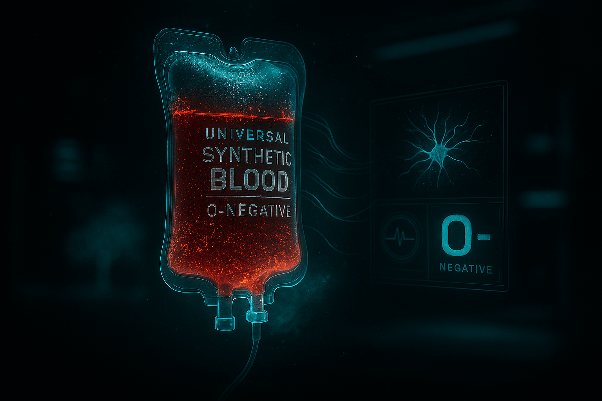

Imagine a soldier shot in the chest. Blood pours out — but within 15 seconds, the bleeding stops. Not from pressure. Not from a tourniquet. But because their blood sealed the wound from the inside.
This isn’t science fiction. This is 2025. And it’s already saving lives.
Researchers at MIT and the University of Washington developed Hemostatic Nanoparticles (HNP-7) — synthetic platelets that:
“It’s like an internal ambulance. The particles find the damage and act faster than a doctor.” — Dr. Erin Lavik, MIT Bioengineering
Lab result: 0.1 mL blood loss vs. 8.7 mL in controls.
2024 DoD-funded trial (swine model, femoral artery transection):
| Group | Survival at 3 Hours | Blood Loss |
|---|---|---|
| Standard Care | 30% | 1,200 mL |
| HNP-7 + Standard | 100% | 90 mL |
No thrombosis. No organ damage. Nanoparticles cleared via liver in 36 hours.
“This is not just treatment — it’s biotechnology giving the body a chance to save itself.” — Col. Michael Davis, U.S. Army Trauma Research
HNP-7 is entering Phase I human trials (2026) for:
Next-gen version (HNP-8): Self-destructs after 6 hours → zero long-term risk.
If blood can self-heal, where is the line between human and machine?
Some say: “We’re not enhancing — we’re restoring what evolution forgot.”
Others fear: “What if soldiers are sent into battle knowing they won’t bleed out?”
“Our body has always known how to heal itself. We’ve simply given it the tools to do it faster.” — Dr. Paula Hammond, MIT Chemical Engineering